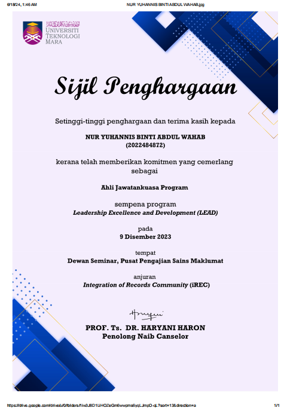
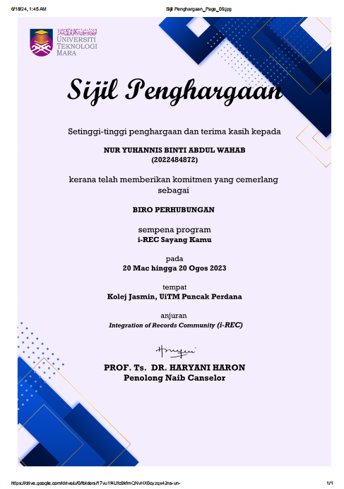
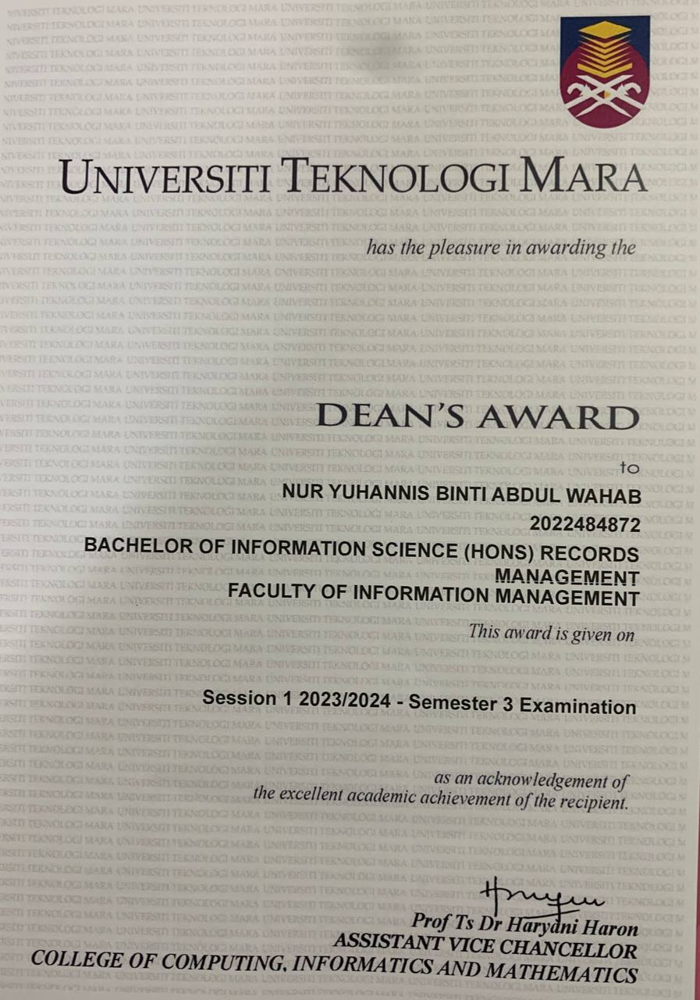
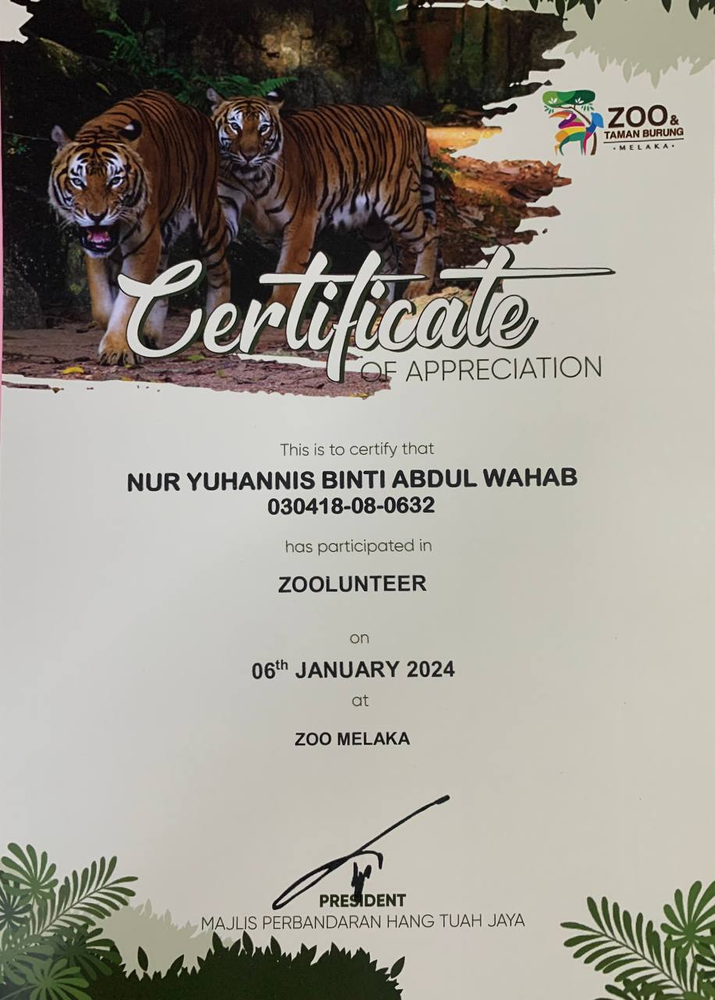

ACHIEVEMENTS :




SKILLS :
MICROSOFT OFFICE SUITE (WORD, EXCEL, POWERPOINT)
WPS OFFICE SOFTWARE
COMMUNICATION :
MALAY LANGUAGE
ENGLISH LANGUAGE
GERMAN LANGUAGE
SOFT SKILLS :
TEAMWORK AND COLLABORATION
PROBLEM SOLVING AND CRITICAL THINKINF
TIME MANAGEMENTt
ADAPTABILITY AND FLEXIBILITY
LEADERSHIP
WORK ETHIC AND DEPENDABILITY
CREATIVITY
INTERPERSONAL SKILLS